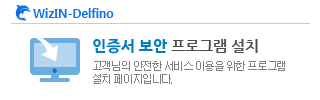

접속PC정보:
하단의 버튼을 눌러 프로그램을 다운로드 받아 설치 하시기 바랍니다.
설치파일 다운로드
Ubuntu용
Fedora용
설치완료 후 장시간 화면이 멈춰있을 경우 조치사항
(1) 정상적인 설치/동작확인을 위하여
접속확인
을 선택하여 정상적으로 접속되는지 확인합니다.
(2) 접속확인시 "보안경고"가 발생시 위험사항 확인 및 CA인증서를
설치
하시기 바랍니다.
인증서 프로그램 설치안내:
[설치안내바로가기]